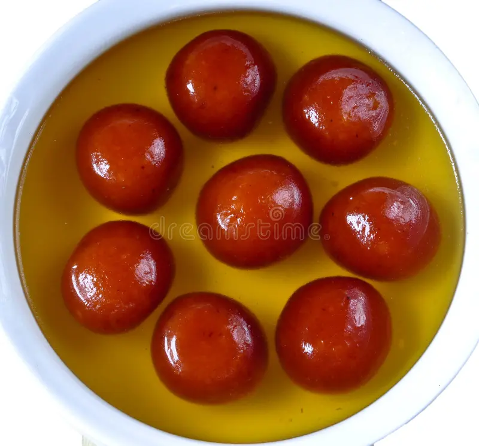
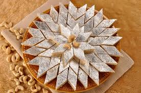

Gulab Jamun
Ingredients
For the dough:
- 1 cup milk powder
- 1/4 cup all-purpose flour
- 1/4 tsp baking baking soda
- 2 tbsp ghee (clarified butter) or unsalted butter
- 1/4 cup milk (adjust as needed)
- A pinch of salt
For the sugar syrup:
- 1 cup sugar
- 1 cup water
- 2-3 cardamom pods (crushed)
- A few drops of rose water (optional)
For Frying:
- Oil or ghee (for deep frying)
Recipe
Make the Sugar Syrup:
- In a saucepan, combine sugar and water.
- Add crushed cardamom pods.
- Bring to a boil, then reduce the heat and let it simmer for about 5-7 minutes until slightly thickened.
- Add rose water (if using) and set aside to cool.
Prepare the Dough:
- In a mixing bowl, combine milk powder, all-purpose flour, baking soda, ghee, and salt.
- Gradually add milk and knead gently until you form a smooth dough. Dont over-knead; it should be soft and pliable.
Shape the Balls:
- Divide the dough into small portions and roll them into smooth balls (about the size of a marble). Make sure there are no cracks.
Fry the Gulab Jamun:
- Heat oil or ghee in a deep frying pan over low to medium heat.
- Once hot, carefully drop the balls into the oil.
- Fry until they turn golden brown, turning occasionally to cook evenly. This can take about 7-10 minutes.
Soak in Syrup:
- Remove the fried gulab jamuns and place them on paper towels to absorb excess oil.
- Once slightly cooled, transfer them to the warm sugar syrup.
- Let them soak for at least 1-2 hours (they'll expand and absorb the syrup).
Serve:
Enjoy your homemade Gulab Jamun warm or at room temperature! They are delicious as a dessert or a sweet treat.

Barfi
Ingredients
- Condensed Milk - 1 can
- Milk Powder - 2 cups
- Ghee - 2-3 tablespoons
- Nuts (like almonds, cashews, or pistachios) - chopped, about 1/2 cup
- Cardamom Powder - 1/2 teaspoon
- Sugar - optional, depending on your sweetness
Recipe
Prepare the Pan:
- Grease a square or rectangular pan with ghee and set aside.
Cook the Mixture:
- In a non-stick pan, heat the ghee over medium heat.
- Add the milk powder and mix well.
- Pour in the condensed milk and stir continuously to avoid lumps.
- Cook for about 5-7 minutes until the mixture thickens and starts to leave the sides of the pan.
Add Flavorings:
- Add the chopped nuts, cardamom powder, and saffron strands (if using). Mix well.
Set the Mixture:
- Once the mixture is well combined and thick, remove it from the heat.
- Pour the mixture into the greased pan and spread it evenly.
- Press it down firmly with a spatula.
Garnish:
- Sprinkle some chopped nuts on top for garnish, pressing them lightly into the mixture.
Cool and Cut:
- Allow it to cool at room temperature for a few hours. Once set, cut it into squares or diamonds.
Serve:
Enjoy your homemade Barfi! Store it in an airtight container.
